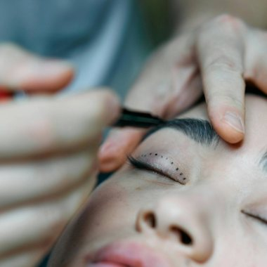

Orlando, FL
Fuller, beautifully natural brows — one crisp hairstroke at a time.

What it is
Microblading is a semi-permanent technique that uses a fine hand-tool to deposit pigment in delicate, hair-like strokes. The result mimics real brow hairs so closely that it's virtually undetectable — perfect for filling gaps, reshaping thin brows, or restoring definition lost over time.
At Brows By Clari, every microblading session begins with custom mapping to your bone structure, so your new brows frame your face in perfect symmetry.
Free personalized consultation
Why you'll love it
The Process
Brows are measured and drawn to your features — you approve the shape first.
We select a pigment tailored to your hair and skin tone.
Clarimar hand-crafts fine, realistic strokes for a natural brow.
A perfecting session 6–8 weeks later locks in crisp, lasting results.
Good to Know
Microblading typically lasts 1 to 3 years depending on your skin type, lifestyle and aftercare. A periodic color boost keeps brows looking fresh.
Most clients feel only mild discomfort. A topical numbing cream is applied to keep you comfortable throughout the session.
Yes — a perfecting touch-up about 6–8 weeks after your initial session is part of the process to ensure even, long-lasting results.
Microblading isn't recommended for very oily skin (powder brows suit better), or if you're pregnant, nursing, or have certain skin conditions. We'll confirm at your consultation.
You may also love
Your transformation starts here
Book your complimentary consultation with Clarimar and design brows or lips made just for you.